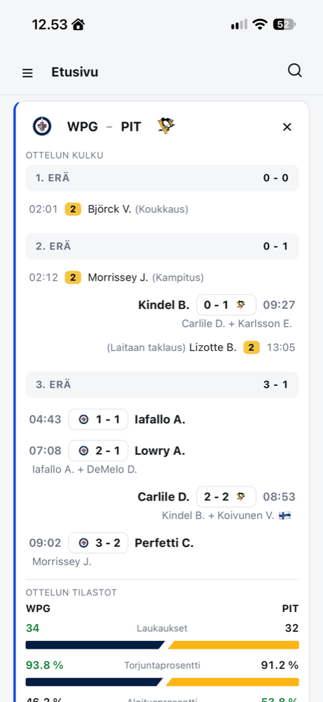
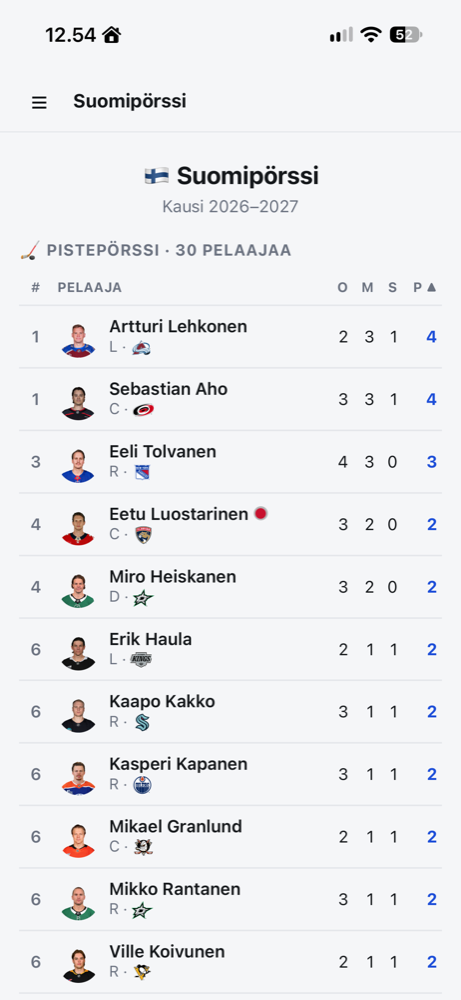
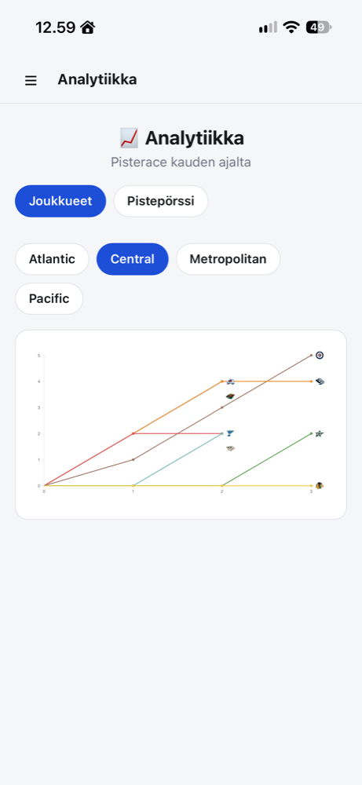

Morning Hockey
Last night's NHL results, with a focus on the Finnish players: their goals, assists and saves in each game, plus standings, scoring leaders, a Finnish scoring race, playoff bracket and a page for every player and all 32 teams. Open it with your morning coffee and the box scores are already waiting.
Logging in is deliberately light — a username is enough — and saves your favorite teams and players. A spoiler-hide setting keeps the scores out of sight until you're ready.



Built with TypeScript, Cloudflare Pages and D1, D3 charts, the public NHL API. The interface is in Finnish.